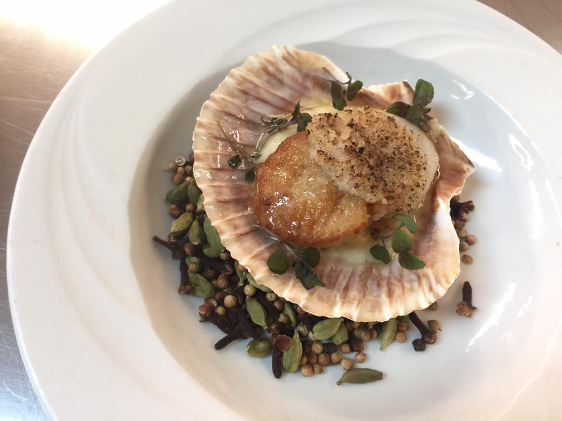
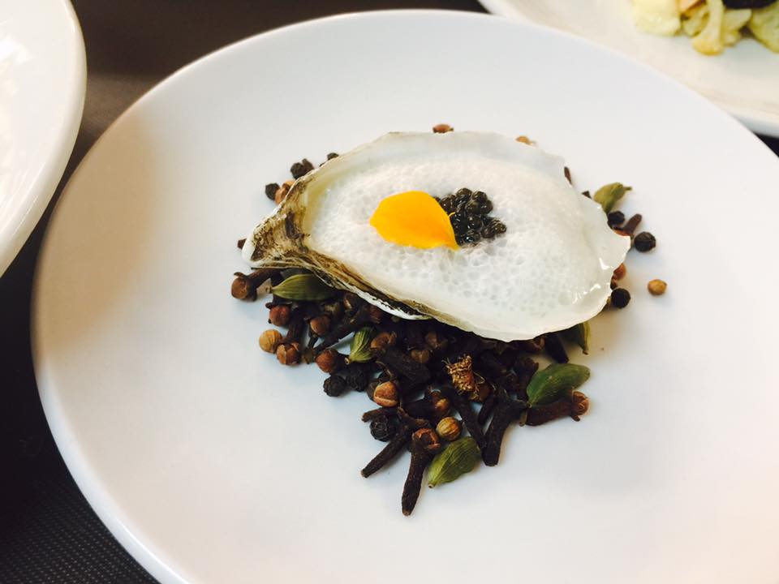
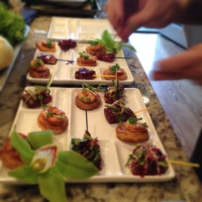
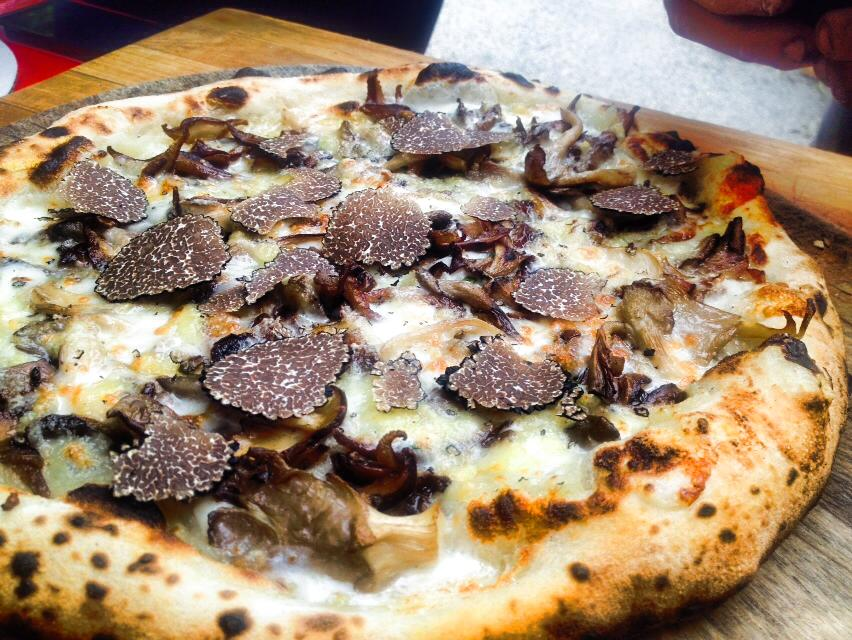
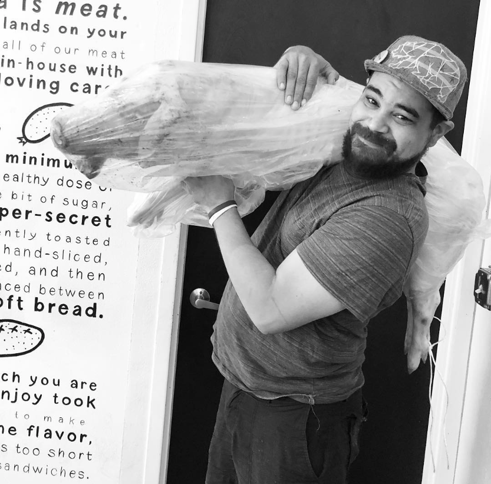
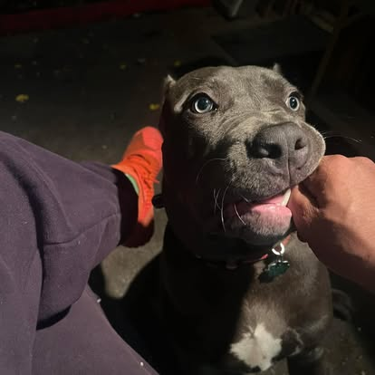
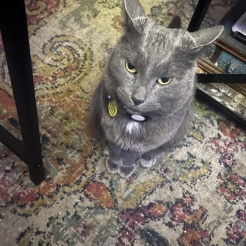
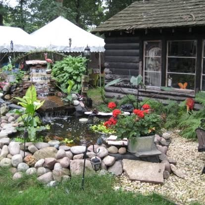

Software Engineer-in-Training | Ex-Chef | Data Whisperer | Koi Therapist
From the North Side of Chicago, through Whitney Young, to DePaul’s business halls, to the heat of the kitchen— and now into the cold logic of code. I’m Arnett McMurray, a former chef turned software engineering student, hunting bugs and cooking data. My goal? Build elegant software, stay curious, and out-code Sean by 2026.
I’ve fed thousands, catered quietly, and roasted pigs whole. Evidence below:
|  |  |  |  |  |
|
Dog: Obi (Staffordshire Terrier, born 2023)  |
Cat: Bubba (Illinois-born, Ancient Soul)  |
Koi Pond + Sanctuary  |